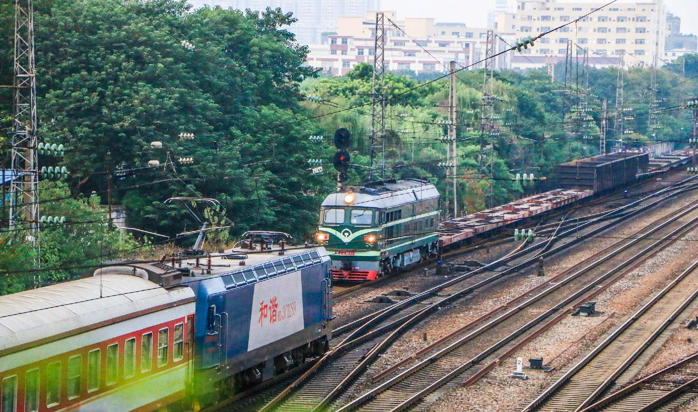
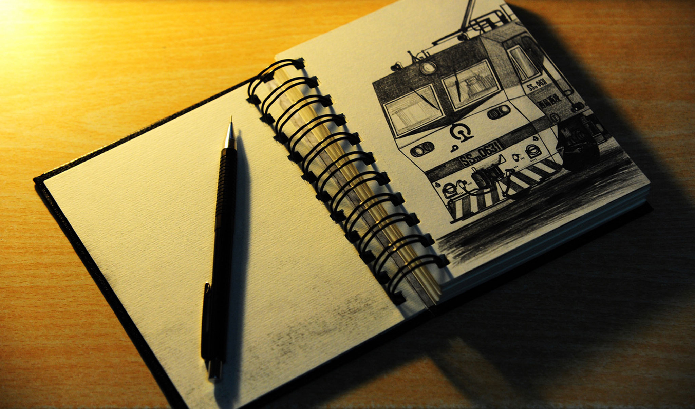

· 最新
寻访计划3.0
我来，我见
我是「寻探青年」
探索荒野痕迹，寻回故道记忆
即将推出
绘途计划
用轨迹
丈量每一寸远方
坐地日“行”八万里，巧手勾勒三千程
MapInsight
看得有多广
向往就越远
是地理，也是记忆
主打
最合拍
是线上群组
更是线下伙伴
用镜头记录钢铁长龙的身姿，
诉说你深爱的理由。
即将推出

行知者
知道的越多
想知道的也越多
这里有无数火花的碰撞，
更有交流与新知。
即将推出

手艺人
种种手艺，
样样精通。
有意思的创作，
便是有乐趣的爱好。
即将推出
城客圈 · I'm transpotter
传播铁道姿势，
探讨交通美学
不仅是一个团体，
更是传承交通爱好亚文化的新生力量。
更多
这就是蓝鲸
一个交通美学研究所
对铁道的爱好，是一种对悠长的时间和广远的空间的追求和信仰。
走进铁博，从大清第一台机车龙号到先进的动车组列车，是时间在流淌；
乘上高铁，沿无砟轨道一路驰骋在大江南北与山河内外，是空间在延伸；
坐上小票，在单线铁轨上慢慢悠悠一路游荡在田间地头，是心灵在远行……
我们用足迹，来丈量每一寸远方。
同趣
是蓝鲸交通美学研究所·车迷圈计划的一部分，
一个为交通爱好者打造的一个活动集散地。
在这里，你可以找到众多和你一样的交通爱好者，
发现并参与你感兴趣的活动。
200+
交通美学研究员
12
交通爱好者活动站点
90+
特色铁道专题与地域活动组织
2000+
爱好者线上线下互动
蓝鲸交通美学研究所 · 城客圈「寻访」系列计划进行中！邀您为您的城市和铁道风光多留些记忆。